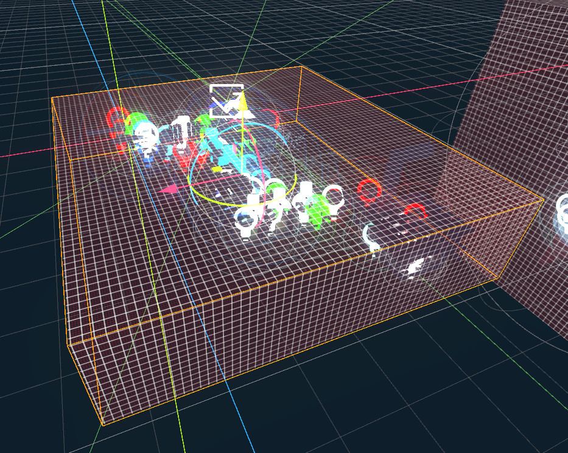

Module: location_chunk
Documentation last edited: October 23, 2025 at 14:33 UTC
Description
Location Chunk - это специальный узел, который берёт часть локации и может опционально добавлять/удалять её из дерева сцены для оптимизации.

Ты можешь использовать этот узел в своих локациях, чтобы частично удалять чанки локации ИЛИ удалять целые её подчасти.
Свойства
LocationChunk
chunk_name
- Имя чанка. Используется только для именования в редакторе.
start_hidden
- Должен ли этот чанк начинаться в скрытом состоянии
use_enclose
- Использовать ли проверку включения AABB для узлов. При
false
использует простую проверку пересечения, которая *может* включать больше, чем должна
use_distance
- Использовать ли управление видимостью на основе расстояния
check_dist_only_on_enters
- Если true, проверять расстояние только когда игрок входит/покидает чанки
distance_n2
- Квадрат порога расстояния для видимости (актуальное расстояние =
sqrt(distance_n2)
)
force_show_on_enter
- Принудительно показывать этот чанк при входе игрока
force_hide_on_exit
- Принудительно скрывать этот чанк при выходе игрока
force_hide_chunks
- Список имён чанков для принудительного скрытия, когда этот чанк активен
force_show_chunks
- Список имён чанков для принудительного показа, когда этот чанк активен
on_enter_events
- Список имён событий для запуска при входе игрока в этот чанк
on_exit_events
- Список имён событий для запуска при выходе игрока из этого чанка
show_event
- Имя события для активации показа этого чанка
hide_event
- Имя события для активации скрытия этого чанка
check_dynamic
- Проверять ли динамические узлы (
RigidBody
) в этом чанке
check_task_points
- Проверять ли точки заданий в этом чанке
check_NPCs
- Проверять ли NPC в этом чанке
update_ref_probe
- Обновлять ли позицию reflection probe при показе этого чанка
ref_probe_intensity
- Интенсивность для установки reflection probe при показе этого чанка
override_environment
- Переопределять ли настройки окружения для этого чанка
environment
- Окружение для использования, когда override_environment равен true
editor_env
- Применять ли настройки окружения для редактора
override_LUT
- Переопределять ли цветокоррекцию LUT для этого чанка
color_grading_LUT
- Путь к LUT цветокоррекции для использования, когда override_LUT равен true
Этот узел служит заменой устаревшему узлу
. Ты можешь получить ту же функциональность, просто используя
LocationZone
force_show_on_enter
и
force_hide_on_exit
. Это будет та же функциональность, если не больше, учитывая тот факт, что он лучше обрабатывает NPC.
General Information
Root directories list
docs, src
Nodes
Classes
Resources
None
Other Scripts
None